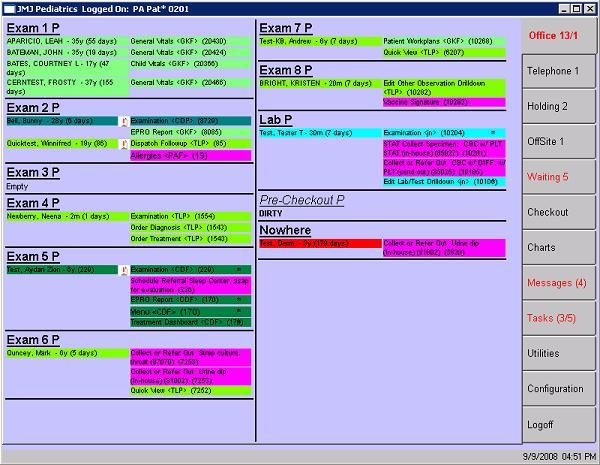

|
Description
The Office View is used extensively by the clinical staff and providers. The Office View serves two functions:
- It serves as a gateway to all of encounterPRO's other screens and functions
- It provides a visual presentation of the office and gives current patient status by tracking each patient from check-in to checkout
The Office view lists each room and station in the office. The rooms match the layout of your office and are defined when encounterPRO is installed.
How to Access This Screen
The OfficeView is the first screen displayed when you log in to encounterPRO. Use the tabs along the right side to display the various screens. Select Office to return to the Office View.
Screen Example

Office View Tabs
At the right side of the Office view (and also on all of the room screens) are several navigation tabs. These tabs allow you to access other parts of the patient record and to perform various functions. Select the link below to view an example of that screen.
What Are Those Numbers on the Tabs?
Tabs which have treatment rooms or can contain a list of patients will have a set of three numbers, such as 12/3/5. Each of those numbers indicates something about the patients and the waiting tasks (also called service bars) in that area.
 What the numbers mean: What the numbers mean:
- First number: the number of patients in that area or group of rooms
- Second number: the number of tasks assigned specifically to the current user
- Third number: the number of tasks assigned to the roles that belong to the current user
So, if the current user is Nurse Betty, and the Office tab reads 3/0/3 there are 3 patients in the exam rooms, zero tasks assigned specifically to Nurse Betty, and 3 additional tasks that are assigned to the roles that are assigned to Nurse Betty (such as Clinical Staff and Lab Nurse).
Want to Learn More?
Related Solutions
Screen: Telephone Room
Screen: Charts Tab
Screen: Checkout Room
Screen: Message List
Screen: Task List
Screen: Utilities List
Screen: Configuration List
How to: Log Out of encounterPRO
|